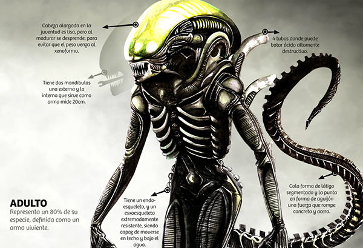

Alien-Xenomorfo
PERFIL | |
|---|---|
|  | |
| Caracteristica | |
| Nome | Xenomorfo |
| Idade | Indeterminada (os Xenomorfos são criaturas alienígenas sem uma idade específica conhecida) |
| Altura | Aproximadamente 2,25 metros (Pode variar conforme o hospedeiro) |
| Peso | Aproximadamente 180 kg(variável dependendo do hospedeiro) |
| Variações | Tarkatano, Conjurador, Ácido |
| Estilo de luta | Misto (Combina diversos estilos brutais e ataques alienígenas únicos) |
| Espécie | Xenomorph XX121 |
| Armas | LâminasTarkatan, Mandíbula Interna, Sangue Ácido e Cauda com Ponta Espinhosa |
| Principal oponente | Predador |
| País/local de origem | Lua: Acheron (LV-426) |
Origem do xenomorfo
Os Xenomorfos são uma das criaturas mais icônicas do gênero de ficção científica e horror, sendo conhecidos principalmente por sua presença nos filmes da franquia Alien, criada por Ridley Scott. A origem dos Xenomorfos e sua história estão intimamente ligadas ao universo dessa franquia, com a primeira aparição do monstro no filme Alien – O Oitavo Passageiro (1979).A Primeira Aparição e a Evolução
A primeira aparição do Xenomorfo no cinema foi em Alien – O Oitavo Passageiro (1979), onde a tripulação de uma nave espacial encontra um sinal de emergência vindo de um planeta desconhecido. Após explorar o planeta, eles descobrem os ovos dos Xenomorfos e acabam por liberar uma das criaturas, que começa a caçar e matar a tripulação. O sucesso de Alien levou a sequências e ao desenvolvimento de um universo expandido, onde a mitologia dos Xenomorfos e a interação com os seres humanos se tornam mais complexas. Em Aliens – O Resgate (1986), por exemplo, o foco muda para um ambiente mais militarizado, com um grupo de fuzileiros espaciais tentando enfrentar uma colônia infestada de Xenomorfos. A franquia também inclui diversos filmes derivados, como Alien 3 (1992), Alien: Resurrection (1997), e os filmes Prometheus (2012) e Alien: Covenant (2017), que exploram as origens dos Xenomorfos e sua relação com outras entidades, como os "Engenheiros" (uma raça alienígena responsável pela criação de várias espécies).Principais ataques
Cuspe de Ácido:
Dispara um jato de ácido corrosivo que causa dano contínuo ao longo do tempo.Língua de Sangue:
Um golpe rápido onde o xenomorfo lança sua língua ácida para frente.Ovoalienígena:
Conjura ovos que podem liberar um Facehugger para atacar os inimigos.Rastejante:
Conjura uma criatura rastejante que persegue e ataca o adversário.Fúria de Lâminas:
Um ataque rápido com lamina, cortando repetidamente o inimigo.Picado Picado: Um ataque contínuo onde o xenomorfo usa suas lâminas para cortar rapidamente o oponente em pedaços.
Chicotada de Cauda:
Um ataque poderoso usando a cauda do xenomorfo para golpear o adversário.Giro de Cauda:
Um ataque giratório que utiliza a cauda para atingir múltiplos golpes.Principal Força
Sendo uma fusão do clássico Xenomorfo da franquia Alien com elementos do universo de Mortal Kombat. O Xenomorfo possui habilidades que fazem dele um lutador agressivo e perigoso, destacando-se por sua força, velocidade e alcance. Suas principais forças incluem:Variedade de Estilos (Variações).
Pressão e Alcance: O Xenomorfo é excelente para manter pressão sobre o oponente. Ele combina ataques rápidos e de longo alcance com a habilidade de fechar rapidamente a distância usando seus movimentos ágeis.
Dano de Combos Altos: Suas variações permitem combos extensos que podem drenar rapidamente a barra de vida do adversário, especialmente em mãos habilidosas.
Movimentos Especiais Únicos:
Chicote de Cauda:
Usa sua longa cauda para ataques de longo alcance.Sangue Ácido:
Pode punir o adversário mesmo ao ser atacado.Facehugger Attacks:
Inicia setups que dificultam a defesa do oponente.Fatalities e Brutalities Memoráveis:
Como esperado de um personagem Xenomorfo, suas finalizações são brutais e horripilantes, incluindo o uso do Facehugger e do Chestburster para exterminar o adversário de forma icônica.Estratégia:
O Xenomorfo é ideal para jogadores que preferem pressionar constantemente o adversário, punir erros e aplicar setups criativos. Sua mistura de alcance, velocidade e dano adicional por ácido ou invocações o torna uma escolha poderosa no elenco de Mortal Kombat X.Razão e Proporção: Sua Altura vs. Xenomorfo
Altura Xenomorfo x Humano
Descubra a altura do hospedeiro com base na proporção do Xenomorfo, que mede aproximadamente 2,5 vezes a altura média de um humano.